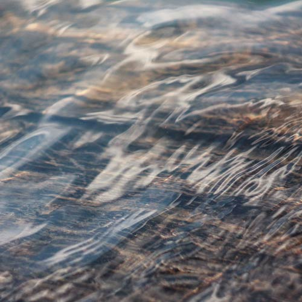

Threats to the Great Lakes today are many, and range from pollution and invasive species to wasteful water use and global warming. All demand our attention and commitment.
About The Great Lakes
The Great Lakes contain nearly 20 percent of the earth’s surface freshwater, providing drinking water to more than 40 million people. A 2007 Brookings Institution report determined that a healthy, restored Great Lakes could generate $50 billion in long-term economic benefits for the region. These benefits would be enjoyed by the businesses and industry that use water for commerce, as well as by beachgoers, naturalists, boaters, anglers and homeowners.
Our Programs
Our vision is that, by working with you, we can conserve and restore our Great Lakes for generations of people and wildlife. Public policy, education and local efforts are how we’ve been caring for the lakes since 1970. Our key programs include:

Clean Water, Healthy Beaches
Our policy experts protect the health of the people, fish and wildlife of the Great Lakes through reducing sewage overflows, controlling pollution from unregulated emerging contaminants, reducing stormwater runoff and curbing pollution from key industrial plants.
Our professional staff works with scientists, government officials, businesses and everyday citizens to develop strategies for protecting our fresh water supply and eliminating wasteful water use. Chief among these is implementation of the historic Great Lakes Compact and Agreement, a first-of-its kind model that sets a high bar for new users of Great Lakes water.
Invasive species foul beaches, destroy fisheries, clog water plants our economy depends on, and permanently disrupt the Great Lakes food web. Stopping invasives before they enter will save the region billions in damages and control costs, and is the only way to secure the future for a restored Great Lakes
The Great Lakes' coasts support the most valuable diversity of fish, wildlife and plant life in the region. We help states, cities and private landowners plan, fund and execute strategies to protect and restore these priceless freshwater shorelines while stopping destruction of existing habitats.
The Alliance for the Great Lakes is dedicated to fostering an ethic of learning, appreciation and care for the Great Lakes. We offer two educational programs:
Designed to promote understanding of the Great Lakes among our children, as it is imperative that they learn about the value of protecting this large, yet fragile web of life.
Designed to promote Great Lakes education for students in grades 9-12. The curriculum focuses on coastal habitats, restoration, careers and stewardship.